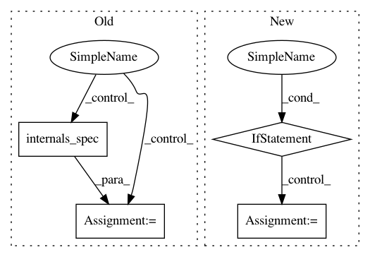

57a99926325cf092994b9c3562b13ff0871d8f4c,tensorforce/core/models/tensorforce.py,TensorforceModel,__init__,#TensorforceModel#Any#Any#Any#Any#Any#Any#Any#Any#Any#Any#Any#Any#Any#Any#Any#Any#Any#Any#Any#Any#Any#Any#Any#Any#Any#Any#,32
Before Change
actions_spec=actions
)
if first_arg is None:
self.policy_internals_spec = policy_cls.internals_spec(**kwargs)
else:
self.policy_internals_spec = policy_cls.internals_spec(first_arg, **kwargs)
internals = OrderedDict()
for internal_name, spec in self.policy_internals_spec.items():
After Change
if baseline_optimizer is None and baseline_objective is not None:
baseline_optimizer = 1.0
if baseline_optimizer is None or isinstance(baseline_optimizer, float):
baseline_is_trainable = True
else:
baseline_is_trainable = False
// Baseline
if baseline_policy is None:
self.separate_baseline_policy = False
self.baseline_internals_spec = self.policy_internals_spec
self.baseline = self.policy
In pattern: SUPERPATTERN
Frequency: 3
Non-data size: 4
Instances
Project Name: reinforceio/tensorforce
Commit Name: 57a99926325cf092994b9c3562b13ff0871d8f4c
Time: 2020-03-31
Author: alexkuhnle@t-online.de
File Name: tensorforce/core/models/tensorforce.py
Class Name: TensorforceModel
Method Name: __init__
Project Name: reinforceio/tensorforce
Commit Name: 9000ad931722064fb2efe38649389a5154538ce4
Time: 2019-02-13
Author: alexkuhnle@t-online.de
File Name: tensorforce/core/networks/auto.py
Class Name: AutoNetwork
Method Name: internals_spec
Project Name: reinforceio/tensorforce
Commit Name: 89ef2b21c7ea77929819dec7ba589c13c49bd702
Time: 2019-01-26
Author: alexkuhnle@t-online.de
File Name: tensorforce/core/models/distribution_model.py
Class Name: DistributionModel
Method Name: __init__